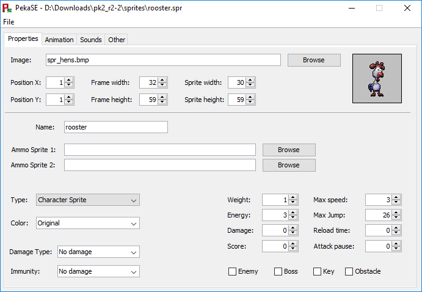
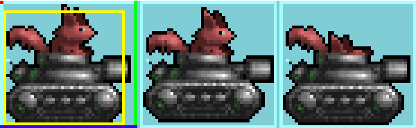
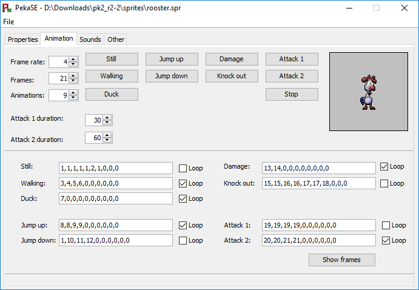
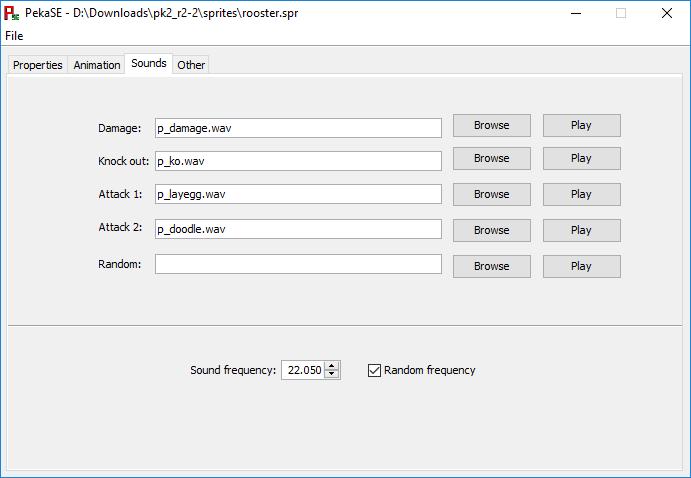
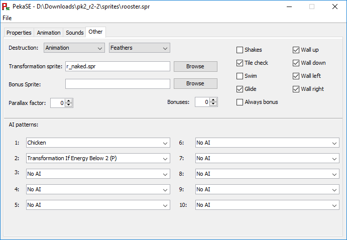

Table of contents
User interface:
FAQ:
PekaSE (Pekka Kana Sprite Editor) is a modern sprite editor for Pekka Kana 2.FAQ:
It allows you to create sprites rather easily. The user interface was designed with usability in mind, so most of the important things are grouped together.
Leading to a clear interface, that is easy to use.
Properties

The following table explains every propertie present in the screenshot.
Max length is the maximum amount of characters this propertie can have.
This limit includes the four characters of: ".bmp", ".wav" and ".spr".
So the actual length is MAX LENGTH - 4.
This limit only affects strings, so if there is no limit the value is a number and it doesn't really matter. (Of course you have to stay in the limits of the integer and double types, but they are so big that you don't have to worry about them.)
| Propertie: TODO | Explanation: | Max length: |
| Image | The image file/sprite sheet for your sprite. | 100 |
| Position X | The position of your sprite in the image file. (Example below) | |
| Position Y | Same as Position X, but for the Y coordinate. | |
| Frame width | The width of your sprite, in the image file. | |
| Frame height | Same as Frame width, but for height | |
| Sprite width | The width of your sprite in the game. (Example below) | |
| Sprite height | Same as Sprite width, but for height | |
| Name | The name of your sprite. (This will only show up in the level editor, it's not used in game.) | 32 |
| Ammo Sprite 1 | This sprite will be shot, if your sprite uses it's first attack. | 100 |
| Ammo Sprite 2 | This sprite will be shot, if your sprite uses it's second attack. | 100 |
| Type | The type of your sprite determines it's function. E.g. a character sprite can be controlled. | |
| Color | This propertie determines the color of your sprite. | |
| Damage Type | This determines which type of damage your sprites does. | |
| Immunity | Which type of damage your sprite doesn't take damage from. | |
| Weight | A weight of 0 allows your sprite to fly. A weight above or equal to 1 doesn't and activates switches. A weight below 0 will cause your sprite to rise up (fast). A higher weight also causes more damage, when falling onto an enemy. | |
| Energy | The amount of hit points your sprite has. If the sprite is a bonus item, energy will restore this many hit points. (E.g. feathers) | |
| Damage | How much damage your sprite does, to other sprites. | |
| Score | If the sprite is of type Character Sprite this value determines the points you will receive when knocking it out. If the sprite is of type Bonus Item Sprite this determines how many points you receive when picking it up. | |
| Max speed | The maximum speed of your sprite. 0 = Not moving 4 = Normal speed | |
| Max Jump | The duration of the jump. Normal jump is around 20 to 25. | |
| Reload time | How long the sprite waits before shooting again, in frames. | |
| Attack pause | If the sprite is of type Ammo Sprite, this will determine the time between each attack. | |
| Enemy | Determines if this sprite is an enemy. | |
| Boss | Determines if this sprite is a boss. If a boss sprite is knocked out skull switches will rotate. | |
| Key | Determines if this sprite is a key or can open locks. | |
| Obstacle | Determines if this sprite is a wall. |
Example
The red dot in the top left corner represent the Position X and Position Y properties.
The blue line at the bottom represents the Frame width propertie and the green line to the right the Frame height propertie.
The yellow rectangle in the middle represents the Sprite width and Sprite height properties.
These values are used to cut out the sprite's image, that you see in the game, from the image file.
Note: The rectangle actually starts at the x and y position 0 in the game.
Animation

The buttons at the top play each play their respective animation, if you click on them.
The Stop button stops the animation.
The Loop checkbox determines if your sprite's animation loops.
Each frame is separated by a comma and each number represents a frame.
Zero marks the end of an animation.
The Show frames button shows you all of the sprite's frames.
Note: Make sure that you have set the Frames propertie correctly. If you don't see all your sprite's frames, check the Frames propertie.
Note: The walking/flying animation for a flying sprite is actually the Duck animation.
| Propertie: | Explanation: |
| Frame rate | The duration of one animation frame, in game frames. |
| Frames | The number of your sprite's frames. |
| Animations | The number of animations. If you set all of them this value would be 9. |
| Attack 1 duration | The duration of the Attack 1 animation, in frames. |
| Attack 2 duration | The duration of the Attack 2 animation, in frames. |
Sounds

The Browse button opens a dialog, which lets you choose a file.
The Play buttons each play their respective sound.
| Propertie: | Explanation: |
| Damage | The sounds the sprite plays when it gets damaged. |
| Knock out | The sound the sprite plays when it gets knocked out. |
| Attack 1 | The sound of the first attack. |
| Attack 2 | The sound of the second attack. |
| Random | This sound plays randomly. |
| Sound frequency | The frequency of all the sound effects, of this sprite. |
| Random frequency | Determines if sounds are played at random frequencies. |
All sound files can have a maximum length of 100 characters, including the ".wav".
Other

The Destruction propertie determines the graphical effects, that appear when the sprite is knocked out.
AI patterns determine the behavior of the sprite. (A full list explaining all patterns can be found here.)
| Propertie: TODO | Explanation: | Max length: |
| Transformation sprite | The sprite this sprite turns into, when knocked out. | 100 |
| Bonus Sprite | The sprite this sprite drops, when knocked out. | 100 |
| Parallax factor | Relation to background image | |
| Bonuses | The number of bonuses the sprite drops, when knocked out. | |
| Shakes | Determines if the sprite shakes randomly. | |
| Tile check | Determines if the sprite can't walk/fly through walls. | |
| Swim | Determines if the sprite can swim. | |
| Glide | Determines if the sprite can glide down. | |
| Always bonus | Determines if the sprite always drops its bonuses, when knocked out. | |
| Wall up | The sprites works as a wall upwards. | |
| Wall down | The sprites works as a wall downwards. | |
| Wall left | The sprites works as a wall to the left. | |
| Wall right | The sprites works as a wall to the right. |
FAQ
AI patterns explained
(B) = AI affects Bonus Sprites
(P) = AI affects also when sprite is controlled by player
The following list is taken from the offical Sprite Spec., which can be found here.
| No AI | Marks the last AI. |
| Chicken | Sprite jumps randomly and tries to get over obstacles. |
| An Egg | Sprite dies, if it hits the floor. |
| Baby Chicken | Same as Chicken, but it tries to follow the player. |
| Bonus (B) | |
| Jumper | |
| Basic AI (B) | Sprite won't get off the map and looks at the same direction it's walking. |
| Turn horizontally | Sprite turns horizontally if it hits an obstacle. |
| Looks Out for Cliffs | Sprite turns horizontally before it falls down from a cliff. |
| Random Horizontal Change of Direction | Sprite turns horizontally at random points. |
| Random Jumping | Sprite jumps randomly. |
| Follow the Player | Sprite follows the player even if it doesn't see it. |
| Random Horizontal Change of Direction | Sprite turns horizontally at random points. |
| Follow the Player if Player is in Front | Sprite follows the player only if it sees it. |
| Transformation If Energy Below 2 (P) | Sprite changes to Transformation Sprite when it's energy drops below 2. |
| Transformation If Energy above 1 (P) | Sprite changes to Transformation Sprite when it's energy rises over 1. |
| Start Directions Towards Player | |
| Ammonition | |
| Non Stop | Sprite is not affected by friction. |
| Attack 1 If Damaged | |
| Self Destruction | |
| Attack 1 If Player is in Front | |
| Attack 1 If Pleyer is Below | |
| Damaged by Water (P) | |
| Attack 2 If Player is in Front | |
| Kill 'em all | Sprite damages both enemies and friends. |
| Affected by Friction | Friction slows the sprite down and stops it. |
| Hide | Sprite ducks if it's behind tile 144. |
| Return to Start Position X | After nothing better to do the sprite always tries to return to it's start position. |
| Return to Start Position Y | After nothing better to do the sprite always tries to return to it's start position. |
| Teleport | |
| Throwable Weapon | |
| Falls When Shaken (B) | |
| Change Trap Stones If KO'ed | |
| Change Trap Stones If Damaged | |
| Self Destructs With Mother Sprite | |
| Moves X COS | |
| Moves Y COS | |
| Moves X SIN | |
| Moves Y SIN | |
| Moves X COS Fast | |
| Moves Y SIN Fast | |
| Moves X COS Slow | |
| Moves Y SIN Slow | |
| Moves Y SIN Free | |
| Random Turning | |
| Jump If Player Is Above | |
| Transformation Timer (B) | |
| Falls If Switch 1 Is Pressed (B) | |
| Falls If Switch 2 Is Pressed (B) | |
| Falls If Switch 3 Is Pressed (B) | |
| Moves Down If Switch 1 Is Pressed | |
| Moves Up If Switch 1 Is Pressed | |
| Moves Right If Switch 1 Is Pressed | |
| Moves Left If Switch 1 Is Pressed | |
| Moves Down If Switch 2 Is Pressed | |
| Moves Up If Switch 2 Is Pressed | |
| Moves Right If Switch 2 Is Pressed | |
| Moves Left If Switch 2 Is Pressed | |
| Moves Down If Switch 3 Is Pressed | |
| Moves Up If Switch 3 Is Pressed | |
| Moves Right If Switch 3 Is Pressed | |
| Moves Left If Switch 3 Is Pressed | |
| Turns Vertically From Obstacle | |
| Random Vertical Starting Direction | |
| Starting Direction Towards Player | |
| Climber | Sprite bounces from walls, floor and ceiling |
| Climber Type 2 | Sprite moves along walls (kind of) |
| Runs Away From Player If Sees Player | |
| Reborn (B) | A new item appears when sprite is collected |
| Arrow Left | These set the direction of the sprite, if the sprite has AI "Move to Arrows Direction". |
| Arrow Righ | |
| Arrow Up | |
| Arrow Down | |
| Move to Arrows Direction | |
| Background Sprite Moon | |
| Background Sprite Moves to Left | |
| Background Sprite Moves to Right | |
| Add Time to Clock | Add time from Reload time |
| Make Player Invisible | Set invicibility time from Reload time |
| Follow the Player Vertic. and Horiz. | Sprite follows the player even if doesn't see it. |
| Follow the Player Vertic. and Horiz. | |
| if Player is in Front | Sprite follows the player only if sees it. |
| Random Move Vertic. and Horiz. | |
| Frog Jump 1 | |
| Frog Jump 2 | |
| Frog Jump 3 | |
| Attack 2 if Damaged | |
| Attack 1 Non Stop | |
| Attack 2 Non Stop | |
| Turn if Damaged | |
| Evil One | |
| Info 1 | use doodle attack to knock out enemys. |
| Info 2 | use egg attack to knock out enemys. |
| Info 3 | collect all keys to open all locks. |
| Info 4 | you can activate switches by jumping on them. |
| Info 5 | green switches activate green blocks. |
| Info 6 | blue switches activate blue blocks. |
| Info 7 | orange switches turn off fire. |
| Info 8 | collect gifts to obtain useful items. |
| Info 9 | if you are hit, feathers will give you energy. |
| Info 10 | a drink from a magic bottle will change you... |
| Info 11 | drink doodle drinks to and get special doodle attacks. |
| Info 12 | drink hatching-booster and get special egg attacks. |
| Info 13 | look for hidden bonuses! |
| Info 14 | you can stomp on enemys, but you will lose energy. |
| Info 15 | look out for traps! |
| Info 16 | hurry up! your time is limited! |
| Info 17 | be aware that some enemys resist certain attacks. |
| Info 18 | a hen is mightier than the sword. |
| Info 19 | why did the chicken cross the road? |
My sprite doesn't show in game
First of all, make sure that the name of your sprite plus the ".spr" doesn't exceed a total of 13 characters.If that is not the case, then check if you placed the sprites image file in the same folder as the sprite file itself.
If that also checks out, make sure that you have set the Position X/Y and Frame width/height correctly.